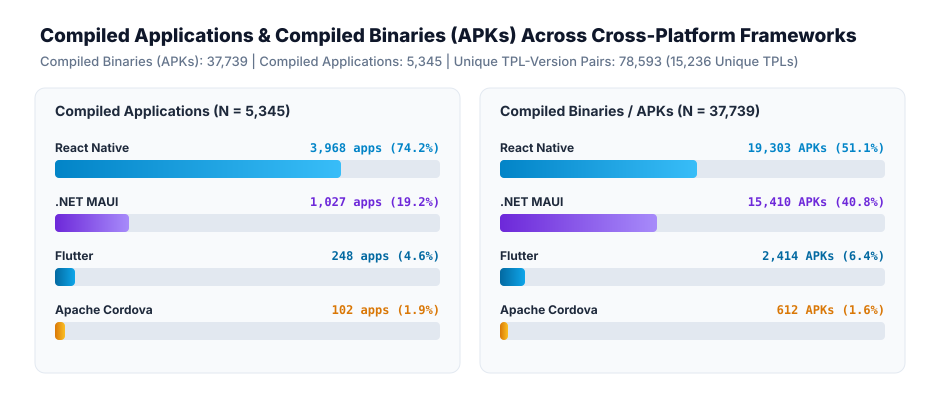
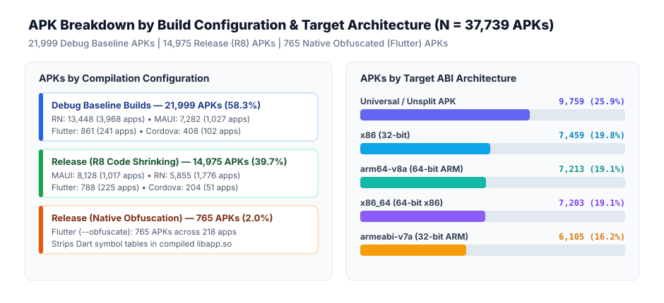
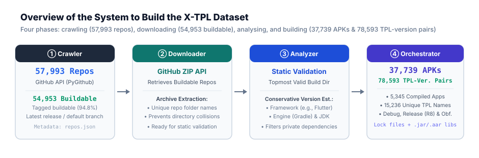

X-TPL: A Ground-Truth Dataset of Cross-Platform Android Apps and their Third-Party Libraries
Abstract
Cross-Platform mobile application frameworks—such as Flutter, MAUI, React Native, and Cordova—have surged in popularity, allowing developers to target multiple platforms from a single codebase. However, this architectural flexibility introduces significant challenges for software maintenance, security auditing, and reverse engineering. Detecting Third-Party Libraries (TPLs) is critical for identifying vulnerabilities and ensuring license compliance, yet state-of-the-art native Android TPL detection tools frequently fail when confronted with the unique compilation targets, JavaScript bridges, and custom runtimes of hybrid ecosystems. Research in this domain remains severely bottlenecked by the lack of high-quality, framework-diverse benchmarks.
We present X-TPL, a large-scale, verified ground-truth dataset specifically curated to advance the state-of-the-art in black-box TPL detection for hybrid Android apps. The dataset contains 37,739 Android APK files (across 5,345 compiled applications) spanning four major hybrid frameworks, mapping them to a verified ground truth of 78,593 unique TPL-version pairs (15,236 unique third-party library names). By capturing the complex interplay between native wrappers and framework-specific dependencies without relying on source code availability, X-TPL provides a rigorous testing ground for evaluating TPL fingerprinting and binary analysis tools in realistic, black-box settings. We outline the automated curation pipeline used to construct the dataset, present an empirical characterization of the hybrid TPL landscape, and demonstrate how our benchmark exposes critical blind spots in existing native detection techniques.
Why Existing Native Tools Fail
State-of-the-art native Android TPL detectors (LibScout, LibRadar, LibScan, LibMD) only inspect Dalvik/ART bytecode (classes.dex), leaving hybrid ecosystems completely invisible.
| Ecosystem / Framework | Where TPLs Reside in APK | Execution Runtime | Resolved Manifest | Native TPL Detection Status |
|---|---|---|---|---|
|
Traditional Native Java / Kotlin |
classes.dex (Dalvik Bytecode) |
Android Runtime (ART) | build.gradle (Maven) |
Visible (Standard Dex) |
| Flutter | lib/arm64-v8a/libapp.so (Native AOT Machine Code) |
Dart Virtual Machine & Engine | package_config.json (pub) |
Blind (Native Shared Object) |
| React Native | assets/index.android.bundle (JS Bytecode / Bundle) |
Hermes / JavaScriptCore | package-lock.json (npm/yarn) |
Blind (JavaScript Bundle) |
| Apache Cordova | assets/www/ (HTML5, JS & Cordova Plugins) |
Android System WebView | plugins.json / package.json |
Blind (WebView Assets) |
| .NET MAUI | assemblies/ (Common Intermediate Language DLLs) |
Mono Runtime / .NET BCL | packages.lock.json (NuGet) |
Blind (CIL Assemblies) |
classes.dex) functions merely as a thin native wrapper or host activity. The core business logic and all actual third-party dependencies are compiled into custom binary formats, WebViews, or non-Java runtimes.
X-TPL provides the first verified compile-time ground truth across all four major hybrid ecosystems, enabling the research community to evaluate and design next-generation, runtime-aware TPL detectors.
Video Showcase
Demonstration video accompanying our Tool Demonstration and Data Showcase submission.
Dataset Composition & Variations
Breakdown of compiled applications, unique third-party libraries, and build configurations across hybrid frameworks.
| Framework | Crawled Repos (Tagged Buildable) | Compiled Apps | Unique TPLs (TPL-Version Pairs) | Compiled Binaries (APKs) | Build Configurations |
|---|---|---|---|---|---|
| React Native | 51,407 (51,010) | 3,968 (4,035 dirs) |
12,508 (68,573)
11,193 prod • 9,376 direct |
19,303 APKs
13,448 Debug • 5,855 R8 |
Debug, Rel. (R8 Code Shrinking) |
| .NET MAUI | 2,159 (1,679) | 1,027 |
1,033 (3,809)
1,033 prod • 340 direct |
15,410 APKs
7,282 Debug • 8,128 R8 |
Debug, Rel. (R8 Code Shrinking) |
| Flutter | 1,768 (1,677) | 248 |
871 (3,222)
846 prod • 435 direct |
2,414 APKs
861 Debug • 788 R8 • 765 Obf. |
Debug, Rel. (R8), Rel. (Native Obfuscation) |
| Apache Cordova | 2,659 (587) | 102 |
3,825 (8,973)
2,927 prod • 95 plugins |
612 APKs
408 Debug • 204 R8 |
Debug, Rel. (R8 Code Shrinking) |
| Total Dataset | 57,993 (54,953) | 5,345 (5,412 dirs) |
15,236 (78,593)
18,237 sum (84,577 ver.) |
37,739 APKs
21,999 Debug • 14,975 R8 • 765 Obf. |
Multi-ABI (ARM64, ARMv7, x86, x86_64, Universal) |
Overview of the X-TPL dataset from Data Collection and Filtering (repos.json) to Compiled Binaries (APKs) and Ground-Truth Artifacts.
| Target ABI | React Native | .NET MAUI | Flutter | Cordova | Total APKs | Share |
|---|---|---|---|---|---|---|
| Universal / Unsplit | 1,264 | 8,150 | 295 (34 base) | 50 | 9,759 | 25.9% |
| x86 (32-bit) | 4,503 | 2,786 | 17 | 153 | 7,459 | 19.8% |
| arm64-v8a (64-bit) | 4,516 | 1,860 | 684 | 153 | 7,213 | 19.1% |
| x86_64 (64-bit) | 4,506 | 1,860 | 684 | 153 | 7,203 | 19.1% |
| armeabi-v7a (32-bit) | 4,514 | 754 | 684 | 153 | 6,105 | 16.2% |
| Total | 19,303 | 15,410 | 2,414 | 612 | 37,739 | 100.0% |
Table I (Paper): Target ABI and Architecture Distribution across Cross-Platform Frameworks.
Ground-Truth Artifacts: Third-Party Library (TPL) Breakdown
Extracted from all 5,345 compiled applications across dependency scopes: All Resolved (direct + transitive dependencies preserved in compile-time lock files), Production Only (excluding devDependencies / dev packages), and Direct Only (top-level declared dependencies).
1. Unique TPLs by Package Name (name)
| Framework | Compiled Apps | Ground-Truth Lock File Source | All Resolved TPLs (Direct + Transitive) |
Production TPLs (Non-Dev Only) |
Direct TPLs Only (Top-Level) |
|---|---|---|---|---|---|
| React Native | 3,968 | package-lock.json / yarn.lock / pnpm-lock.yaml |
12,508 | 11,193 | 9,376 |
| .NET MAUI | 1,027 | packages.lock.json (NuGet) |
1,033 | 1,033 | 340 |
| Flutter | 248 | pubspec.lock / package_config.json (Pub) |
871 (865 non-SDK) | 846 | 435 |
| Apache Cordova | 102 | package-lock.json + package.json |
3,825 (+ 95 plugins) | 2,927 | 2,806 |
| Sum Across 4 Frameworks | 5,345 | Per-framework sum | 18,237 | 15,999 | 12,957 |
| Deduplicated Total (Ecosystem Union) | 5,345 | Deduplicating 3,001 shared npm packages (RN & Cordova) | 15,236 | 13,645 | 10,883 |
Unique third-party library names (name) per framework and deduplicated across package ecosystems.
2. Unique TPL-Version Pairs (name@version)
| Framework | Compiled Apps | All Resolved TPL-Version Pairs (Direct + Transitive) |
Production TPL-Version Pairs (Non-Dev Only) |
Direct TPL-Version Pairs (Top-Level) |
|---|---|---|---|---|
| React Native | 3,968 | 68,573 | 59,684 | 43,453 |
| .NET MAUI | 1,027 | 3,809 | 3,809 | 753 |
| Flutter | 248 | 3,222 (3,215 non-SDK) | 3,127 | 1,020 |
| Apache Cordova | 102 | 8,973 | 5,955 | 4,774 |
| Sum Across 4 Frameworks | 5,345 | 84,577 | 72,575 | 50,000 |
| Deduplicated Total (Ecosystem Union) | 5,345 | 78,593 | 68,547 | 47,201 |
Unique TPL-version pairs (name@version) per framework and deduplicated across package ecosystems (5,984 shared npm TPL-version pairs between React Native and Cordova).
libs/):
React Native and Apache Cordova both use the npm ecosystem and share 3,001 unique package names (13,332 unique npm packages combined) and 5,984 identical TPL-version pairs (71,562 unique npm TPL-version pairs combined). In addition to framework-specific lock files, X-TPL preserves directly included .jar/.aar/.so binaries in project libs/ folders: 27 unique .jar/.aar files in Cordova (33 instances), 8 unique .aar/.so files in React Native (65 instances), and 1 unique .so binary in Flutter.


Automated Curation Pipeline
Python-orchestrated, Docker-isolated compilation system divided into four phases: crawling, downloading, analysing, and building.
❶ Crawler (Data Collection & Filtering)
Uses the GitHub API via the PyGithub library to identify repositories associated with Flutter, React Native, Apache Cordova, and .NET MAUI. Targets the latest release (or latest commit on the default branch), pre-filters based on essential framework files (pubspec.yaml, package.json), and tags repositories as buildable or not buildable in repos.json.
❷ Downloader (Data Collection & Filtering)
Retrieves all repositories tagged as buildable using GitHub's ZIP API endpoint. To prevent directory collisions, each repository is extracted into an isolated folder named using its unique GitHub repository name.
❸ Analyzer (Analysis & Version Estimation)
Validates downloaded repositories via static analysis before any build is attempted, filtering out missing Android build definitions or private dependencies. Locates the topmost valid build directory (selecting alphabetically on ties) and conservatively estimates baseline versions for the framework, engine (Gradle), and JDK.
❹ Orchestrator (Containerized Compilation & Extraction)
Executes builds inside dynamically generated Docker containers, automatically incrementing framework or JDK versions on mismatch. Compiles architecture-specific APKs in Debug, Release (utilizing R8), and Flutter native obfuscation configurations, and extracts the resulting Compiled Binaries (APKs) and Ground-Truth Artifacts (package-lock.json, yarn.lock, package_config.json, packages.lock.json, and direct .jar/.aar binaries).

repos.json), ❷ Downloader (GitHub ZIP API extraction), ❸ Analyzer (static validation & conservative version estimation), and ❹ Orchestrator (Docker-isolated compilation yielding 37,739 Compiled Binaries across 5,345 apps and 78,593 unique TPL-version pairs).
Dataset Structure & Availability
Openly accessible data repository with multiple retrieval protocols and structured framework directories.
Direct browser exploration and single-file or zip downloads hosted on CloudLab Vault storage.
Recommended for downloading large APK batches with differential syncing and automatic resume.
rsync -avz --progress rsync://vault.cloudlab.zhaw.ch/x-tpl ./x-tpl/
Standard FTP endpoint accessible via command-line tools (curl, wget) or GUI clients (FileZilla, Cyberduck).
ftp://vault.cloudlab.zhaw.ch/x-tpl/